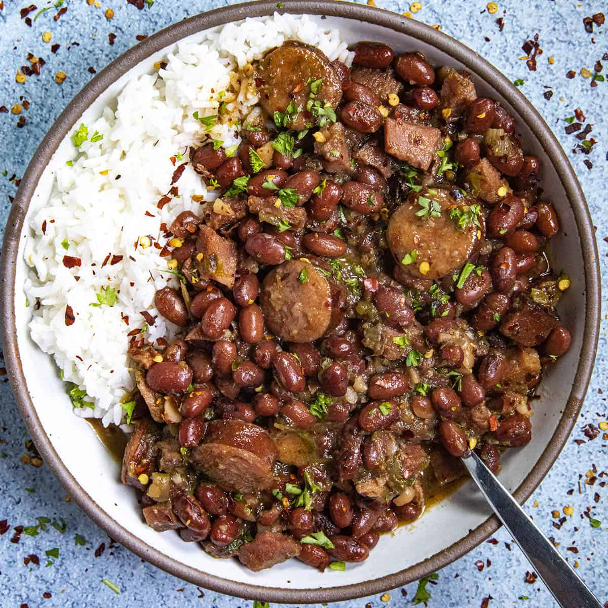

Recipe Detail
Recipe Detail
Red Beans&Rice

Required ingredients
List of ingredients
- 1 cup dried red beans, soaked overnight
- 2 cups white rice
- 1 onion, finely chopped
- 1 bell pepper, chopped
- 2 celery stalks, chopped
- 3 garlic cloves, minced
- 1 bay leaf
- 1 teaspoon dried thyme
- 1/2 teaspoon paprika
- 1/2 teaspoon cayenne pepper (adjust to taste)
Other
-
- Difficulty level: Easy
- Required time: 20min
Steps
- Rinse the soaked red beans under cold water and set aside.
- In a large pot, sauté onion, bell pepper, celery, and garlic until softened.
- Add the sliced sausage to the pot and cook until lightly browned.
- Add the rinsed red beans, bay leaf, thyme, paprika, and cayenne pepper. Stir to combine.
- Add chicken broth or water to the pot, ensuring the beans are covered by at least an inch of liquid.
- Bring to a boil, then reduce heat to low and let simmer for about 1.5-2 hours, or until beans are tender. Stir occasionally and add more water if needed.
- While beans are simmering, cook rice according to package instructions.
- Once beans are tender, season with salt and pepper to taste. Remove the bay leaf.
- Serve the red beans over rice, garnished with sliced green onions. Add hot sauce if desired.